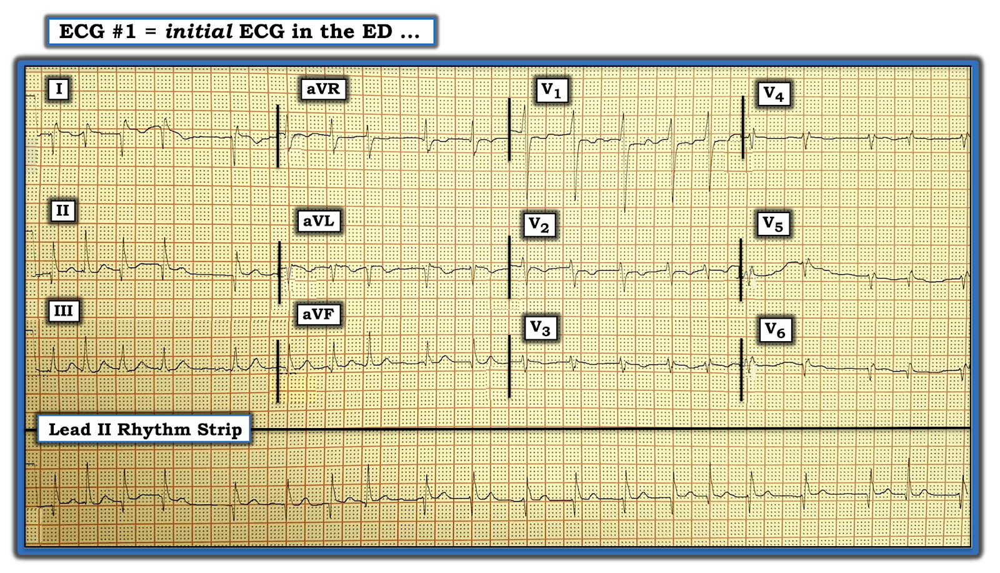
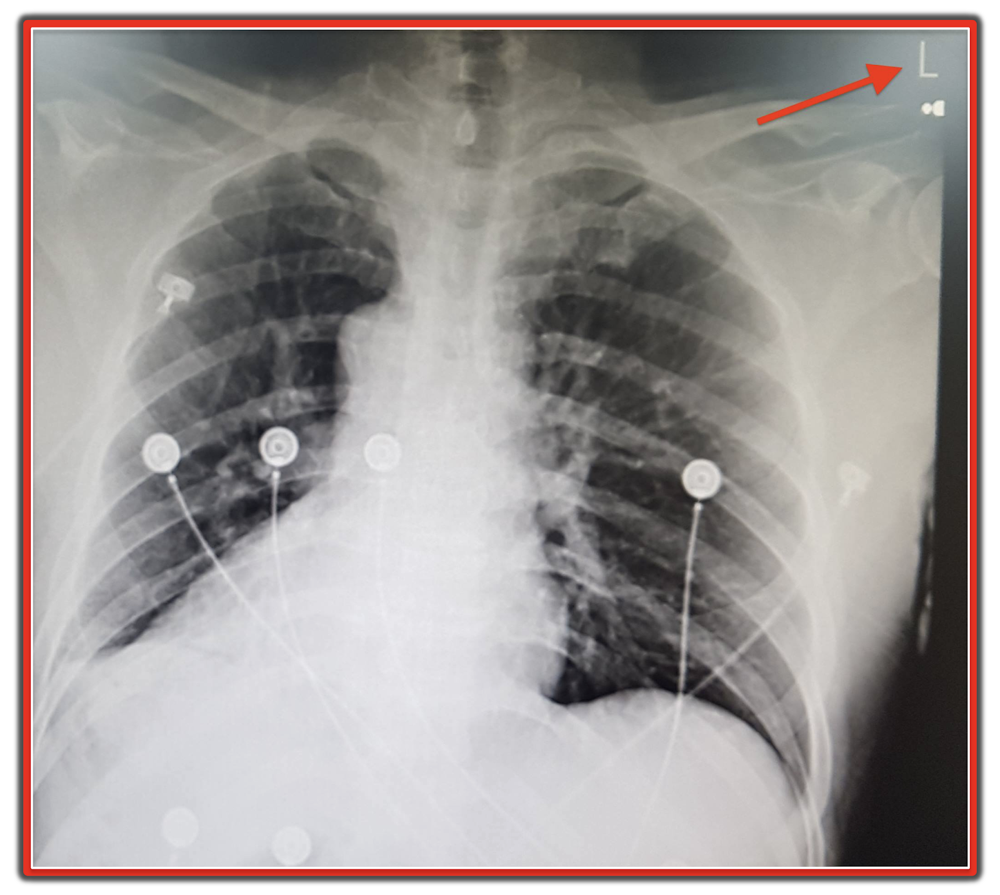
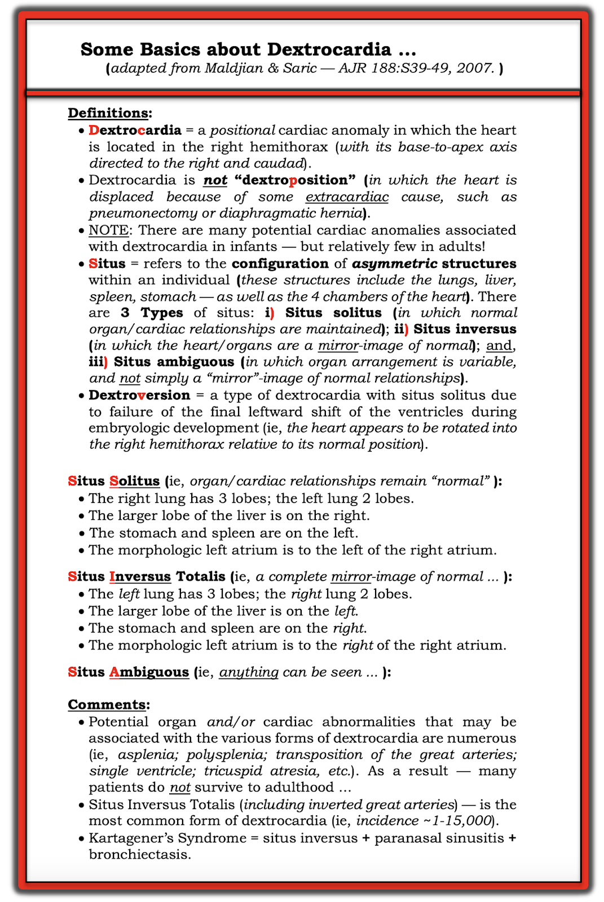
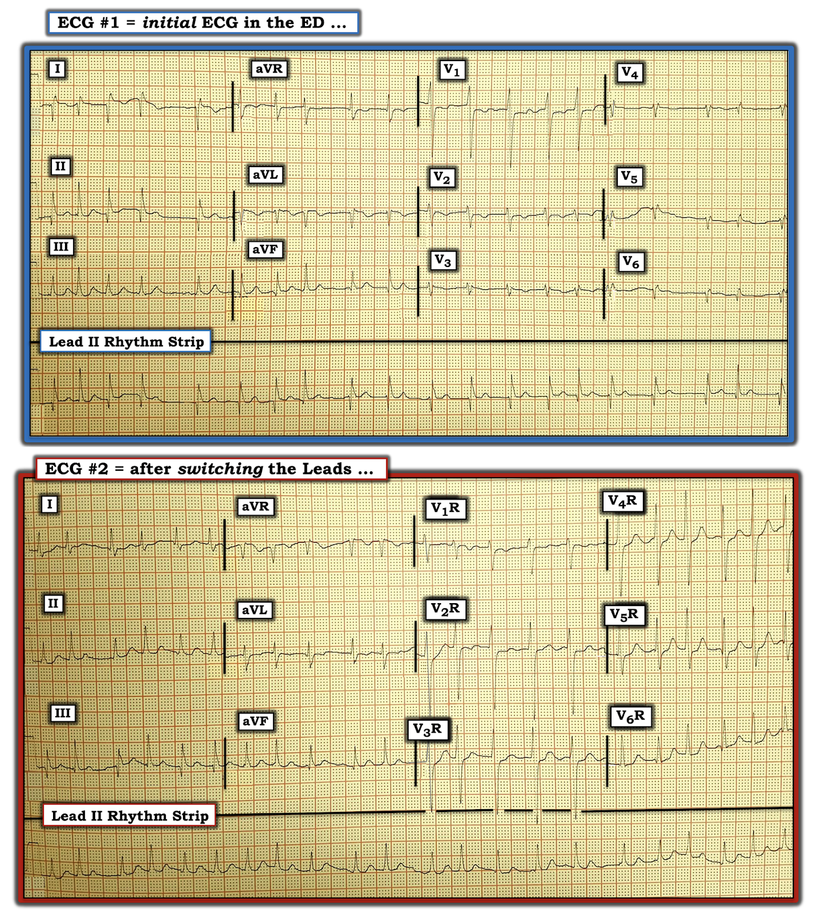

ECG Blog #175 — Đảo điện cực — hay không phải?
Bạn được yêu cầu diễn giải điện tâm đồ 12 chuyển đạo cùng với dải nhịp chuyển đạo II dài được ghi đồng thời trong Hình-1. Bản ghi này thu được từ một người đàn ông ngoài 60 tuổi — đến khoa cấp cứu (ED) vì hồi hộp đánh trống ngực khởi phát đột ngột.
- Nguyên nhân có khả năng gây ra triệu chứng của bệnh nhân này là gì?
- CÒN ĐIỀU GÌ KHÁC đang diễn ra trên điện tâm đồ này?


BÌNH LUẬN: Nhìn vào dải nhịp chuyển đạo II dài — nhịp nhanh và không đều hoàn toàn. Không thấy sóng P ở bất kỳ chuyển đạo nào trong 12 chuyển đạo. Vì vậy, nhịp này là AFib (rung nhĩ – Atrial Fibrillation) với đáp ứng thất nhanh — và đây có lẽ là nguyên nhân khiến bệnh nhân đột ngột bị hồi hộp đánh trống ngực.
- CÒN ĐIỀU GÌ KHÁC đang diễn ra?
- GỢI Ý #1: Bạn đã BAO NHIÊU LẦN thấy sóng Q sâu như thế này ở chuyển đạo I?
- GỢI Ý #2: Bạn nghĩ gì về tăng tiến sóng R ở các chuyển đạo ngực?
TRẢ LỜI: Rất bất thường khi có sóng Q chiếm ưu thế ở chuyển đạo I. Ngay cả khi đã có nhồi máu thành bên — sự hiện diện của một sóng lệch âm ban đầu chiếm ưu thế ở chuyển đạo I cũng không thường gặp.
- ĐIỂM THEN CHỐT (PEARL): Phát hiện sóng Q chiếm ưu thế ở chuyển đạo I cần đặt ra câu hỏi đặt sai vị trí điện cực hay tim sang phải (dextrocardia). Điều này càng đúng NẾU có âm toàn bộ (tức là của sóng P, phức bộ QRS và sóng T) ở chuyển đạo I.
- Nếu hóa ra không có đặt sai vị trí điện cực cũng không có tim sang phải ở điện tâm đồ #1 — thì sóng Q ở các chuyển đạo bên cao I và aVL (cũng như ở chuyển đạo II) + các sóng ST-T bất thường mà ta thấy ở một số chuyển đạo khác trên bản ghi này sẽ gợi ý khả năng nhồi máu cơ tim mới xảy ra gần đây hoặc cấp tính.
LƯU Ý: Việc đánh giá điện tâm đồ trong Hình-1 để tìm khả năng đặt sai vị trí điện cực hoặc tim sang phải rõ ràng trở nên khó khăn hơn — vì nhịp là AFib, và không thấy sóng P.
- Tôi đã nhiều lần điểm lại các dấu hiệu điện tâm đồ khi có Đảo điện cực (lead reversal) LA-RA (Left Arm-Right Arm – tay trái-tay phải) (Xem Bình luận của tôi ở cuối trang trong bài ngày 11 tháng 2 năm 2020 đăng trên Dr. Smith’s ECG Blog — và đặc biệt Xem ca bệnh và phần bàn luận về đảo điện cực LA-RA kèm nhồi máu cơ tim cấp trong ECG Blog #264).
- Có vẻ như ít nhất một số nhát ở chuyển đạo I của điện tâm đồ #1 biểu hiện sóng T đảo ngược, cũng như sóng Q ban đầu sâu. Ngoài ra, có một thành phần dương nổi bật của sóng R ở chuyển đạo aVR. Các dấu hiệu này phù hợp với hoặc đảo điện cực LA-RA hoặc tim sang phải.
- BẠN CÓ ĐỂ Ý rằng có tăng tiến sóng R đảo ngược (Reverse R Wave Progression) ở các chuyển đạo ngực của điện tâm đồ #1 không? Tức là, sóng R cao nhất thấy ở chuyển đạo V1 — sau đó biên độ sóng R giảm dần khi đi qua các chuyển đạo ngực. Ngoài chuyển đạo V1 — biên độ QRS ở các chuyển đạo ngực của điện tâm đồ #1 rất nhỏ, và biểu hiện bằng hình dạng rSr’ hết sức bất thường ở các chuyển đạo V3 đến V6.
CÂU HỎI: Cách dễ nhất để phân biệt đảo điện cực LA-RA với tim sang phải ở điện tâm đồ #1 là gì?
TRẢ LỜI: Có một vài việc đơn giản có thể làm:
- Nghe tim bệnh nhân để xác định tiếng tim nghe được ở bên trái hay bên phải?
- Chụp X-quang ngực (Hình-2).
- Kiểm tra lại vị trí điện cực — và ghi lại điện tâm đồ. NẾU nghi ngờ đảo điện cực LA-RA — ghi thêm một điện tâm đồ với các chuyển đạo ngực bên phải. NẾU nghi ngờ tim sang phải — cũng có thể ghi thêm một điện tâm đồ nữa với cả chuyển đạo chi và chuyển đạo ngực được đảo ngược.


HÌNH-2: Phim X-quang ngực của bệnh nhân này xác nhận Tim sang phải!
- Quai động mạch chủ và bóng tim gần như là hình ảnh soi gương của vị trí bình thường.
Về TIM SANG PHẢI (DEXTROCARDIA): Có một hệ thuật ngữ riêng gắn với rất nhiều biến thể có thể có của tim sang phải. Tôi tóm tắt một số điểm CƠ BẢN về thực thể lâm sàng này trong Hình-3:
- Như đã nêu trong Hình-3 — đảo ngược phủ tạng toàn bộ (Situs Inversus Totalis) là dạng tim sang phải thường gặp nhất, với tần suất ~1 trên 15,000 người trong dân số chung. Mặc dù tôi không thấy rõ bóng hơi dạ dày trên phim X-quang này — các cấu trúc lồng ngực có vẻ là hình ảnh soi gương của bình thường.


CÂU HỎI: Điện tâm đồ của bệnh nhân này được ghi lại sau khi đảo cả chuyển đạo chi và chuyển đạo ngực (Hình-4). Nhịp vẫn là AFib với đáp ứng thất nhanh.
- Bây giờ bạn thấy GÌ?


TRẢ LỜI: Điện tâm đồ #2 được ghi sau khi đảo cực tính của các chuyển đạo chi và đặt các chuyển đạo trước tim ở các vị trí tương ứng bên phải lồng ngực.
- Lưu ý rằng sóng Q quá lớn từng thấy ở chuyển đạo I của điện tâm đồ #1 (cũng như sóng T đảo ngược ở chuyển đạo này) không còn nữa.
- Giờ đây đã thấy cả QRS và sóng T đều âm là chủ yếu ở chuyển đạo aVR (như bình thường vẫn thấy).
- Tăng tiến sóng R ở các chuyển đạo ngực giờ đã phù hợp (vùng chuyển tiếp chỉ hơi muộn, nằm giữa chuyển đạo V4 đến V5). So với điện tâm đồ #1 — biên độ QRS ở điện tâm đồ #2 đã tăng lên nhiều ở các chuyển đạo ngực, và giờ biểu hiện hình dạng QRS phù hợp ở các chuyển đạo trước tim.
- Mặc dù thay đổi ST-T không đặc hiệu vẫn còn — không còn gợi ý nhồi máu mới xảy ra. Sóng Q từng lúc ở chuyển đạo III và aVF của điện tâm đồ #2 nhiều khả năng không phải là dấu hiệu bất thường ở bệnh nhân AFib nhanh này.
-----------------------------------------------------------------------
Lời cảm ơn: Xin cảm ơn 유영준 (đến từ Seoul, Hàn Quốc) đã cung cấp ca bệnh và bản ghi này.
-----------------------------------------------------------------------
==================================
Các bài ECG Blog liên quan đến ca hôm nay:
- ECG Blog #205 — Điểm lại Cách tiếp cận hệ thống của tôi trong đọc điện tâm đồ 12 chuyển đạo.
- ECG Blog #264 — Điểm lại một ca đảo điện cực LA-RA + nhồi máu cơ tim cấp (kèm Audio Pearl và phần bàn luận đầy đủ về cách nhận biết đảo điện cực).
- Bài ngày 19 tháng 11 năm 2020 đăng trên Dr. Smith's ECG Blog — trong đó tôi trình bày một ca dễ bị bỏ sót nhưng quan trọng, trong đó đảo điện cực LA-LL đã bị bỏ sót (với "manh mối" là nhận ra sóng P ở chuyển đạo I cao hơn chuyển đạo II (I > II)).
- Bài ngày 28 tháng 8 năm 2020 đăng trên Dr. Smith's ECG Blog — Bình luận của tôi (trong Phần bổ sung, ở tận cuối trang) điểm lại các dấu hiệu dự kiến khi có đảo điện cực LA-LL (Manh mối = sóng P ở chuyển đạo I lớn hơn sóng P ở chuyển đạo II).
- Bài ngày 29 tháng 7 năm 2018 đăng trên Dr. Smith's ECG Blog — Bình luận của tôi (ở cuối trang) điểm lại ca này, trong đó có 2 lỗi kỹ thuật mà nhiều bác sĩ đã không nhận ra ( = đảo điện cực LA-RA và đặt quá cao chuyển đạo V1, V2 trên ngực).
- Bài ngày 11 tháng 2 năm 2020 đăng trên Dr. Smith's ECG Blog — Bình luận của tôi (ở cuối trang) điểm lại ca này, trong đó có đảo điện cực LA-RA.